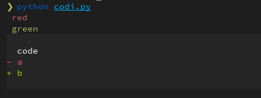

test¶
the code¶
from rich.console import Console
from rich.markdown import Markdown
from rich.syntax import Syntax
import pygments
console=Console(color_system="256")
console.print("[red] red")
console.print("[green] green")
console.print(Syntax(
"""
code
- a
+ b
""","diff"))
the screenshot in the terminal¶

using markdown-exec¶
What is the reason for the missing colors in the diff?
red and green in the diff are important for me. The correct background color would be nice, but is not so important.